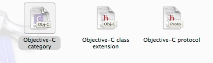
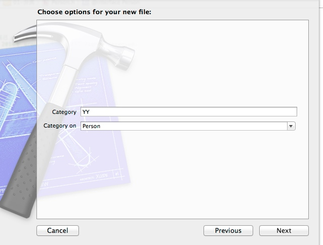
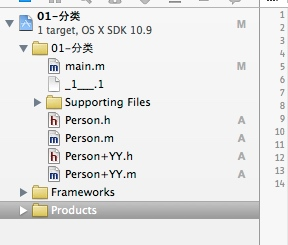

一、分类
（一）分类的基本知识
概念：Category 分类是OC特有的语言，依赖于类。
分类的作用：在不改变原来的类内容的基础上，为类增加一些方法。
添加一个分类：


文件结构图：

在分类中添加一个方法
@interface Person (Test)
- (void)study;
@end
Study方法的实现
- (void)study
{
NSLog(@"调用了分类的 study 方法");
}
测试程序：
Person *p = [[Person alloc] init];
// 调用分类中的方法
[p study];
// 打印结果
2016-07-30 00:58:48.606 test[28739:6902446] 调用了分类的 study 方法
（二）分类的使用注意
- 分类只能增加方法（包括类方法和对象方法），不能增加成员变量；
- 在分类方法的实现中可以访问原来类中的成员变量；
- 分类中可以重新实现原来类中的方法，但是会覆盖掉原来的方法，导致原来的方法无法再使用（警告）；
- 方法调用的优先级：分类->原来的类->父类，若包含有多个分类，则最后参与编译的分类优先；
- 在很多的情况下，往往是给系统自带的类添加分类，如NSObject和NSString，因为有的时候，系统类可能并不能满足我们的要求。
- 在大规模的应用中，通常把相应的功能写成一个分类，可以有无限个分类，对原有类进行扩充，一般分模块写，一个模块一个分类。
（三）分类编程练习
- 给NSString类增加一个类方法，计算某个字符串对象中阿拉伯数字的个数；
- 给NSString类增加一个对象方法，计算当前字符串对象中阿拉伯数字的个数；
分类中方法的声明
@interface NSString (NumberOfs)
// 为 NSString 类增加一个类方法, 计算某个字符串阿拉伯数字的个数
+ (int)numberOfString:(NSString *)str;
// 为 NSString 类增加一个对象方法, 计算当前对象中的阿拉伯数字的个数
- (int)numberCount;
@end
分类中方法的实现
@implementation NSString (NumberOfs)
+ (int)numberOfString:(NSString *)str
{
int count = 0;
for (int i = 0; i < str.length; i++)
{
// 去除字符串中的第i个位置的字符给c
unichar c = [str characterAtIndex:i];
// 注意这里是字符, 需要使用单引号
if (c >= '0' && c <= '9')
{
count++;
}
}
return count;
}
// 实现对象方法
- (int)numberCount
{
int count = 0;
for (int i = 0; i < self.length; i++)
{
// 取出字符串中第i个位置的字符给c
unichar c = [self characterAtIndex:i];
// 注意这里是字符, 需要使用单引号
if (c >= '0' && c <= '9')
{
count++;
}
}
return count;
}
@end
测试程序：
// 调用分类中实现的类方法
int a = [NSString numberOfString:@"1234qwer890"];
NSLog(@"%d", a);
// 调用分类中实现的对象方法
int b = [@"2134JFIf" numberCount];
NSLog(@"%d", b);
// 打印结果
2016-07-30 01:15:10.736 test[28972:6958370] 7
2016-07-30 01:15:10.737 test[28972:6958370] 4
二、类的深入研究
（一）类的本质
类本身也是一个对象，是class类型的对象，简称“类对象”。
Class类型的定义：
Typedef struct obj class *class;
类名就代表着类对象，每个类只有一个类对象。
利用 class 创建 Person类
利用 Person 创建 Person 类型的对象
Person *p = [[Person alloc] init];
获取内存中的类对象有两种方法：
（1）class c=[p class];//指向类的对象的指针调用class方法
（2）Class c1=[Person class];//使用类名调用class方法
注意：c和c1打印出来的地址相同，class c2=[p class];可以证明所有的对象共用一个类方法。
（ 二）类的加载和初始化
// Person 类的声明
@interface Person : NSObject
@end
/// Person类的实现
@implementation Person
- (void)load
{
NSLog(@"Person + load");
}
- (void)initialize
{
NSLog(@"Person + initialize");
}
@end
测试程序：
@interface Student : Person
@end
@implementation Student
// 重写类的加载和初始化方法
- (void)load
{
NSLog(@"Student + initialize");
}
- (void)initialize
{
NSLog(@"Student + initialize");
}
@end
// 创建一个Person类对象
// 第一次使用Person类
Person *p = [[Person alloc] init];
Person *p1 = [[Person alloc] init];
// 第一次使用Student类
Student *s = [[Student alloc] init];
// 打印结果
2016-07-30 01:24:47.951 test[29139:7007082] Person + load
2016-07-30 01:24:47.953 test[29139:7007082] Student + initialize
2016-07-30 01:24:48.136 test[29139:7007082] Person + initialize
2016-07-30 01:24:48.137 test[29139:7007082] Student + initialize
- 当程序启动时，就会加载项目中所有的类和分类，而且加载后会调用每个类和分类的+load方法，只会调用一次；
- 当第一次使用某个类时，就会调用当前类的+initialize方法；
- 先加载父类，再加载子类（先调用父类的+load方法，再调用子类的+load方法，最后调用分类的+load方法），先初始化父类，再初始化子类（先调用父类的+initialize方法，再调用子类的+initialize方法）。
- 注意：在初始化的时候，如果在分类中重写了+initialize方法，则会覆盖掉父类的。
- 重写+initialize方法可以监听类的使用情况。